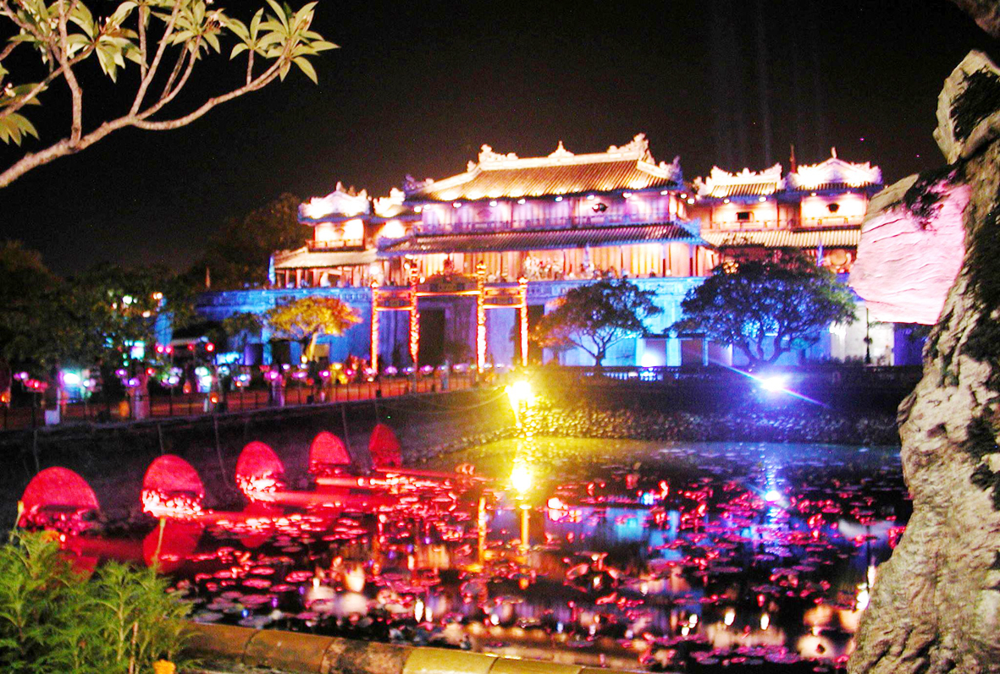
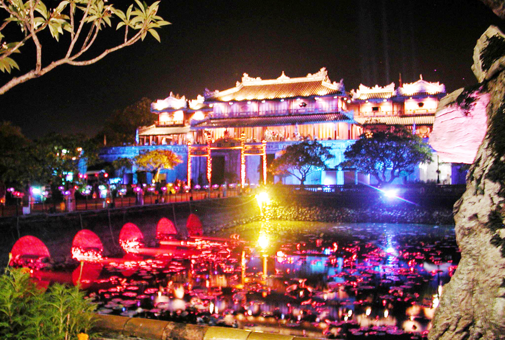

Huế là cố đô của Việt Nam, từng là trung tâm chính trị và văn hóa của triều đại nhà Nguyễn. Trải qua nhiều giai đoạn lịch sử, Huế vẫn giữ được vẻ đẹp cổ kính, trầm mặc và yên bình rất riêng.
Thành phố Huế nổi tiếng với quần thể di tích lịch sử gồm cung điện, lăng tẩm, đền chùa và nhiều công trình kiến trúc mang đậm dấu ấn cung đình. Không gian Huế nhẹ nhàng, chậm rãi, gắn liền với dòng sông Hương thơ mộng và những hàng cây xanh mát.
Bên cạnh giá trị lịch sử, Huế còn hấp dẫn du khách bởi văn hóa truyền thống, lễ hội đặc sắc và ẩm thực phong phú. Con người Huế hiền hòa, thanh lịch, góp phần tạo nên nét đẹp văn hóa đặc trưng của vùng đất cố đô.
Biển Thuận An nằm ở cửa biển Thuận An, cách trung tâm thành phố Huế khoảng 15 km. Đây là bãi biển quen thuộc đối với người dân địa phương và du khách khi đến Huế. Thuận An có bãi cát dài, không gian thoáng đãng và là nơi thích hợp để nghỉ ngơi, thư giãn sau những ngày tham quan di tích lịch sử. Ngoài ra, du khách đến Thuận An còn có thể thưởng thức nhiều món hải sản tươi ngon với giá cả hợp lý.
Đại Nội Huế là trung tâm của quần thể di tích Cố đô Huế, nơi sinh sống và làm việc của các vua triều Nguyễn. Công trình được xây dựng với quy mô lớn, gồm nhiều cung điện, đền đài và cổng thành uy nghi.
Kiến trúc Đại Nội thể hiện rõ quyền uy của triều đình phong kiến, đồng thời phản ánh trình độ nghệ thuật và xây dựng tinh xảo của người xưa. Mỗi công trình trong Đại Nội đều gắn liền với những câu chuyện lịch sử quan trọng. Ngày nay, Đại Nội Huế là di sản văn hóa thế giới được UNESCO công nhận và là điểm tham quan không thể thiếu khi đến Huế.
Lăng Khải Định là nơi an nghỉ của vua Khải Định, vị vua thứ mười hai của triều Nguyễn. Lăng có kiến trúc độc đáo, khác biệt so với các lăng tẩm khác ở Huế. Công trình là sự kết hợp hài hòa giữa kiến trúc truyền thống Việt Nam và phong cách phương Tây hiện đại. Các chi tiết trang trí bên trong lăng được khảm sành, sứ rất công phu và tinh xảo. Dù không có diện tích lớn, lăng Khải Định vẫn gây ấn tượng mạnh bởi vẻ đẹp cầu kỳ và giá trị nghệ thuật đặc sắc.
Vườn quốc gia Bạch Mã nằm ở phía nam tỉnh Thừa Thiên Huế, là khu bảo tồn thiên nhiên quan trọng của miền Trung. Nơi đây có hệ sinh thái đa dạng với nhiều loài động, thực vật quý hiếm.
Nhờ vị trí địa lý và độ cao, Bạch Mã có khí hậu mát mẻ quanh năm, rất thích hợp cho du lịch sinh thái và nghỉ dưỡng. Du khách có thể tham gia các hoạt động như leo núi, khám phá thác nước và tận hưởng không khí trong lành.
Bạch Mã là điểm đến lý tưởng cho những ai yêu thích thiên nhiên và muốn tránh xa sự ồn ào của đô thị.
Biển Lăng Cô nằm ở huyện Phú Lộc, tỉnh Thừa Thiên Huế và được mệnh danh là một trong những vịnh biển đẹp nhất thế giới. Nơi đây nổi bật với bãi cát trắng mịn và làn nước biển trong xanh.
Phong cảnh Lăng Cô hài hòa giữa biển, núi và đầm phá, tạo nên vẻ đẹp thiên nhiên thơ mộng. Đây là địa điểm lý tưởng cho du lịch nghỉ dưỡng và chụp ảnh phong cảnh.
Lăng Cô hiện nay còn có nhiều khu du lịch và resort, thu hút đông đảo du khách trong và ngoài nước.
Chùa Thiên Mụ là ngôi chùa cổ nổi tiếng và lâu đời nhất ở Huế, nằm bên bờ sông Hương thơ mộng. Chùa được xây dựng từ thế kỷ XVII và gắn liền với lịch sử hình thành vùng đất Huế.
Hình ảnh tháp Phước Duyên của chùa Thiên Mụ đã trở thành biểu tượng quen thuộc khi nhắc đến cố đô Huế. Không gian chùa thanh tịnh, yên bình, mang đậm giá trị tâm linh.
Chùa Thiên Mụ không chỉ là nơi sinh hoạt tín ngưỡng mà còn là điểm tham quan văn hóa, lịch sử thu hút nhiều du khách.
 
